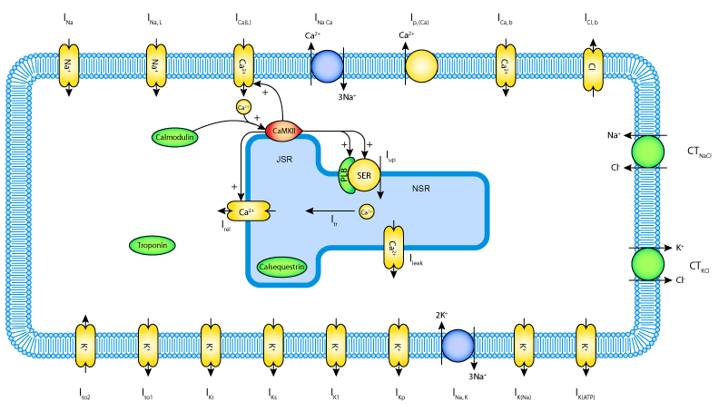

This CellML version of the model has been checked in COR and Chaste. The units are consistent and the model runs to recreate the published results. The CellML file was adapted from the Hund-Rudy 2004 M Cell, non-tissue model to match the original matlab code used by the authors. The paper has an ensemble of 19 different parameter sets, which are included in the exposure as parameters.txt
ABSTRACT: Cell lines expressing ion channels (IC) and the advent of plate-based electrophysiology device have enabled a molecular understanding of the action potential (AP) as a means of early QT assessment. We sought to develop an in silico AP (isAP) model that provides an assessment of the effect of a compound on the myocyte AP duration (APD) using concentration-effect curve data from a panel of five ICs (hNav1.5, hCav1.2, hKv4.3/hKChIP2.2, hKv7.1/hminK, hKv11.1). A test set of 53 compounds was selected to cover a range of selective and mixed IC modulators that were tested for their effects on optically measured APD. A threshold of >10% change in APD at 90% repolarization (APD90) was used to signify an effect at the top test concentration. To capture the variations observed in left ventricular midmyocardial myocyte APD data from 19 different dogs, the isAP model was calibrated to produce an ensemble of 19 model variants that could capture the shape and form of the APs and also quantitatively replicate dofetilide- and diltiazem-induced APD90 changes. Provided with IC panel data only, the isAP model was then used, blinded, to predict APD90 changes greater than 10%. At a simulated concentration of 30 µM and based on a criterion that six of the variants had to agree, isAP prediction was scored as showing greater than 80% predictivity of compound activity. Thus, early in drug discovery, the isAP model allows integrating separate IC data and is amenable to the throughput required for use as a virtual screen.
|  |
|
Schematic diagram of the Davies et al. 2012 (Hund and Rudy 2004) Canine Ventricular Cell Model. |
The original paper reference is cited below:
An in silico canine cardiac midmyocardial action potential duration model as a tool for early drug safety assessment, M. R. Davies, H. B. Mistry, L. Hussein, C. E. Pollard, J.-P. Valentin, J. Swinton, and N. Abi-Gerges, 2012, Am J Physiol Heart Circ Physiol, 302:H1466-H1480. PubMed ID: 22198175 doi:10.1152/ajpheart.00808.2011